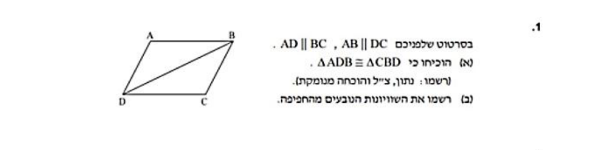
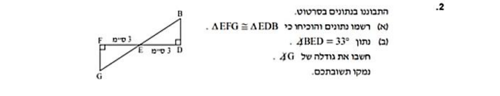
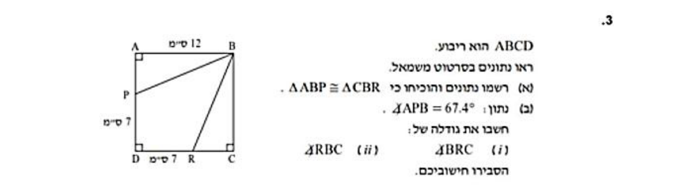

זו התחנה שבה הגאומטריה מפסיקה להיות "לזהות צורות" ומתחילה להיות "להוכיח".
נלמד מתי מותר להגיד ששני משולשים הם בעצם אותו משולש, איך כותבים את זה במחברת
כמו שהמורה מבקשת — ובסוף נפתור יחד, עד הסוף, את שלושת תרגילי החפיפה
האמיתיים מעבודת הקיץ שלך.
בסוף העמוד תדעי: לבחור נכון בין ארבעת משפטי החפיפה —
צ.צ.צ, צ.ז.צ, ז.צ.ז ו-צ.צ.ז ·
לכתוב הוכחת חפיפה מסודרת בטבלת טענה ונימוק ·
למצוא צלע חסרה במשולש ישר-זווית עם משפט פיתגורס.
כל תרגיל גאומטריה מתחיל באותה שנייה של זיהוי: איזה משולש יש לי, ומה מסומן בו?
כל סימון פותח משפחה אחרת של כללים.
לפי צלעות: שווה-צלעות (שלוש צלעות שוות, וכל זווית \(60^\circ\)) ·
שווה-שוקיים (שתי צלעות שוות — עליו כל שלב 2) · שונה-צלעות (אין צלעות שוות בהכרח).
לפי זוויות: חד-זוויות (כל הזוויות חדות) ·
ישר-זווית (זווית אחת של \(90^\circ\) — עליו כל שלב 5) ·
קהה-זווית (זווית אחת קהה).
והכלל שעובד בכל משולש, בלי יוצא מהכלל:
סכום הזוויות במשולש
$$\textcolor{#C2408C}{\alpha}\;+\;\textcolor{#B7791F}{\beta}\;+\;\textcolor{#2E7D32}{\gamma}\;=\;180^\circ$$
ורוד — \(\alpha\), זווית ידועה אחת ענברי — \(\beta\), זווית ידועה שנייה ירוק — \(\gamma\), הזווית שמחפשים: \(\gamma=180^\circ-\alpha-\beta\)
שתי זוויות ידועות — השלישית כבר לא בחירה שלנו:
\(\textcolor{#2E7D32}{\gamma}=180^\circ-\textcolor{#C2408C}{40^\circ}-\textcolor{#B7791F}{55^\circ}=85^\circ\).
את כל ארגז הכלים של הזוויות — קודקודיות, מתחלפות, זוויות על ישר —
פגשת בתחנה הקודמת. נשתמש בו הרבה גם כאן:
בתרגילי עבודת הקיץ של התחנה הזו יש גם זוויות קודקודיות וגם זוויות מתחלפות.
שלב 2 מתוך 6 · שווה-שוקיים
משולש שווה-שוקיים: זוויות הבסיס שוות
במשולש שווה-שוקיים שתי הצלעות השוות נקראות שוקיים, הצלע השלישית
נקראת בסיס, ושתי הזוויות שיושבות על הבסיס נקראות זוויות הבסיס.
המשפט המרכזי — בשני הכיוונים:
המשפט (וההפך שלו)
אם \(\textcolor{#2563EB}{AB=AC}\), אז זוויות הבסיס שוות:
\(\textcolor{#C2408C}{\angle B=\angle C}\).
וגם ההפך נכון: אם \(\textcolor{#C2408C}{\angle B=\angle C}\),
אז \(\textcolor{#2563EB}{AB=AC}\) —
והמשולש שווה-שוקיים גם אם אף אחד לא אמר לנו את זה מראש.
הסימון הכחול — קו באמצע כל שוק (לא מקצה לקצה) — אומר
"שתי אלה שוות זו לזו", ולכן שתי זוויות הבסיס הוורודות שוות. כאן זווית הראש היא
\(\textcolor{#B7791F}{80^\circ}\), ולכן כל זווית בסיס:
\(\frac{180^\circ-\textcolor{#B7791F}{80^\circ}}{2}=\frac{100^\circ}{2}=\textcolor{#C2408C}{50^\circ}\).
איך משתמשים בזה בתרגילים
ברגע שכתוב "שווה-שוקיים" (או שרואים סימוני צלעות שוות בשרטוט) —
מסמנות מיד את שתי זוויות הבסיס באותה אות. זווית אחת ידועה במשולש כזה
כמעט תמיד מספיקה כדי למצוא את כל השאר, כי שתיים מהזוויות שוות.
שלב 3 מתוך 6 · חפיפה
חפיפת משולשים: מתי שני משולשים הם אותו משולש?
שני משולשים חופפים אם הם זהים לחלוטין — כל הצלעות שוות בהתאמה
וכל הזוויות שוות בהתאמה. אפשר לחשוב על זה כך: זה אותו משולש בדיוק,
רק במקום אחר — מוזז, מסובב, אולי הפוך כמו במראה. מסמנים:
\(\triangle ABC\cong\triangle DEF\).
שימי לב: סדר האותיות קובע
כשכותבים \(\triangle ABC\cong\triangle DEF\), האותיות מסודרות
לפי ההתאמה: \(A\leftrightarrow D\),
\(B\leftrightarrow E\), \(C\leftrightarrow F\).
מזה קוראים ישר את השוויונות: \(AB=DE\),
\(\angle A=\angle D\) וכן הלאה — בלי להסתכל בשרטוט בכלל.
ובכיוון השני: כשאת כותבת חפיפה, בדקי שהאותיות שלך באמת מסודרות לפי ההתאמה.
והחדשות הטובות: לא צריך לבדוק את כל שש ההשוואות. מספיקות שלוש נכונות —
ואלה בדיוק ארבעת משפטי החפיפה שברשימת המשפטים של החוברת:
צ.ז.צ, ז.צ.ז, צ.צ.צ, וצלע-צלע-והזווית-שמול-הצלע-הגדולה (בקיצור צ.צ.ז).
איך מסמנים בכיתה: כל זוג איברים שווים מקבל סימון משלו בשני המשולשים.
הסימון על צלע הוא קו קצר באמצע הצלע — קצר במובהק מהצלע עצמה,
כדי שייקרא כסימון ולא כצלע.
משפט חפיפה 1 · צ.צ.צ (צלע-צלע-צלע)
שלוש הצלעות של משולש אחד שוות לשלוש הצלעות של המשולש השני, בהתאמה.
הצלע הירוקה \(AB\) גדולה מהכתומה
\(BC\), והזווית הוורודה ב-\(C\) יושבת
בדיוק מול הירוקה — הגדולה מבין השתיים. זה התנאי של המשפט.
המקרה השכיח ביותר שלו: שני משולשים ישרי-זווית שבהם שווים היתר וניצב.
היתר הוא תמיד הצלע הגדולה במשולש ישר-זווית, והזווית הישרה יושבת בדיוק מולו —
כך שהתנאי מתקיים מעצמו.
למשל \(\angle B=\angle E=90^\circ\) עם
\(AC=DF=10\) ו-\(BC=EF=6\):
\(10>6\), ולכן \(\triangle ABC\cong\triangle DEF\)
לפי צ.צ.ז.
ההוכחה המלאה של המקרה הזה, שורה-שורה, היא
דגם 8 בספריית הדגמים.
שימי לב: בצ.צ.ז בודקים קודם מול איזו צלע יושבת הזווית
התנאי של המשפט הוא שהזווית השווה יושבת מול הצלע הגדולה מבין שתי הצלעות
השוות — ורק כך הוא חל. כשהיא יושבת מול הקטנה, אותם נתונים מתאימים לשני משולשים שונים
(רואים את זה בשרטוט של התרגיל האחרון בעמוד), ולכן שם מחפשות דרך אחרת.
וכלל נוסף מאותה רשימה:
אין לחפוף משולשים לפי צ.ז.ז (זווית, זווית והצלע שאינה ביניהן).
מה שכן עושים במצב הזה: מראים ששתי הזוויות שוות, מסיקים מהן שגם
הזווית השלישית שווה (סכום הזוויות במשולש
\(180^\circ\)), ואז הצלע כבר כלואה בין שתי זוויות שוות —
ומשתמשים ב-ז.צ.ז.
איך בוחרים משפט? סופרים מה יש
אחרי שסימנת על השרטוט את כל מה שנתון, ספרי:
שלוש צלעות? ← צ.צ.צ. · שתי צלעות וזווית ביניהן? ← צ.ז.צ ·
שתי זוויות וצלע ביניהן? ← ז.צ.ז.
שתי צלעות וזווית שאינה ביניהן? בודקות מול איזו צלע היא יושבת: מול הגדולה ← צ.צ.ז.
שתי זוויות וצלע שאינה ביניהן? משלימות את הזווית השלישית ← ז.צ.ז.
יש רק שניים מתוך שלושה? מחפשים איבר שלישי שהשרטוט עצמו נותן:
צלע משותפת, זוויות קודקודיות, זוויות מתחלפות בין מקבילים, זוויות בסיס
בשווה-שוקיים. זה בדיוק המשחק בתרגילים של שלב 6.
שלב 4 מתוך 6 · כותבים הוכחה
איך כותבים הוכחת חפיפה במחברת — טענה ונימוק
בעבודת הקיץ כתוב במפורש: "רשמו: נתון, צ"ל והוכחה מנומקת".
זה בדיוק השלד שכל הוכחה בבית הספר בנויה ממנו — וההוכחה עצמה נכתבת
כטבלה של טענה | נימוק: כל שורה אומרת משהו, ומיד מסבירה
מאיפה היא יודעת אותו. נבנה אחת ביחד, מההתחלה עד הסוף.
שלב 1 · ביחד
הוכחת החפיפה הראשונה שלך
בשרטוט: הקטעים \(AC\) ו-\(BD\) נחתכים בנקודה
\(E\).
נתון: \(\textcolor{#2563EB}{AE=CE}\) וגם \(\textcolor{#059669}{BE=DE}\).
צריך להוכיח (צ"ל): \(\triangle AEB\cong\triangle CED\).
ובהמשך — סעיף ב: רשמי את השוויונות הנובעים מהחפיפה.
כחול = הזוג \(\textcolor{#2563EB}{AE=CE}\),
ירוק = הזוג \(\textcolor{#059669}{BE=DE}\),
והקשתות הוורודות = הזוויות בנקודת החיתוך, שתכף נשתמש בהן.
נסי לנחש את השלב הבא לפני שאת פותחת אותו.
שלב ראשון — מסמנים על השרטוט מה נתון
מסמנות קו קצר באמצע \(AE\) ובאמצע
\(CE\) (זוג אחד), וסימון אחר באמצע
\(BE\) ובאמצע \(DE\)
(זוג שני). יש לנו שתי צלעות
בכל משולש — חסר איבר שלישי כדי להפעיל משפט חפיפה.
שלב שני — מאיפה משיגים איבר שלישי?
מסתכלות איפה שני המשולשים נפגשים: בנקודה \(E\).
הזוויות \(\angle AEB\) ו-\(\angle CED\)
הן זוויות קודקודיות — ומהתחנה הקודמת את יודעת שהן שוות, תמיד.
ועכשיו שימי לב איפה הזווית הזו יושבת: בדיוק בין שתי הצלעות
הנתונות בכל משולש. כלואה. זה בדיוק מה שצ.ז.צ דורש.
שלב שלישי — כותבים במחברת: טענה ונימוק
ככה זה נראה כתוב מסודר — בדיוק בפורמט שהמורה מצפה לו.
הכל נכתב בתוך הטבלה: הנתונים פותחים אותה (והנימוק שלהם — פשוט
"נתון"), כל חישוב הוא שורה משלו, וסעיף ב ממשיך באותה טבלה אחרי שורת הפרדה:
טענה
נימוק
1
\(\textcolor{#2563EB}{AE=CE}\)
נתון
2
\(\textcolor{#059669}{BE=DE}\)
נתון
3
\(\textcolor{#C2408C}{\angle AEB=\angle CED}\)
זוויות קודקודיות שוות
4
\(\triangle AEB\cong\triangle CED\)
משפט חפיפה צ.ז.צ (לפי 1, 3, 2)
מש"ל א׳
סעיף ב — השוויונות הנובעים מהחפיפה
5
\(AB=CD\)
צלעות מתאימות במשולשים חופפים שוות (לפי 4)
6
\(\angle EAB=\angle ECD\)
זוויות מתאימות במשולשים חופפים שוות (לפי 4)
7
\(\angle ABE=\angle CDE\)
זוויות מתאימות במשולשים חופפים שוות (לפי 4)
מש"ל ב׳
את השורות של סעיף ב קוראים ישר מהתאמת האותיות
(\(A\leftrightarrow C\), \(E\leftrightarrow E\),
\(B\leftrightarrow D\)) — בלי להסתכל בשרטוט בכלל.
אותה שאלה בניסוחים אחרים — איך עוד מבקשים הוכחת חפיפה?
"הוכיחו כי \(\triangle AEB\cong\triangle CED\)" — הניסוח הישיר.
"הוכיחו כי \(AB=CD\)" — ניסוח נפוץ מאוד! כדי להוכיח
ששתי צלעות שוות, מוכיחים קודם שהמשולשים שלהן חופפים, ואז הצלעות שוות כי הן מתאימות.
"הוכיחו כי \(\angle A=\angle C\)" — אותו טריק בדיוק, עם זוויות.
"מצאו את גודל הזווית..." כשחסר נתון במשולש אחד — לפעמים הדרך היחידה אליו
עוברת דרך חפיפה למשולש השני (זה בדיוק תרגיל 2 של עבודת הקיץ, בשלב 6).
ברגע שכתוב "הוכיחו ששני קטעים / שתי זוויות שווים" ואין דרך ישירה —
חשדי מיד: כנראה הדרך עוברת דרך חפיפה.
השלד הקבוע של כל הוכחה
נתון (מה שקיבלנו) ← צ"ל (מה שצריך להוכיח) ←
הוכחה בטבלת טענה | נימוק ← מסקנה (אם ביקשו שוויונות נובעים).
ובסוף כל חלק שהוכחת — חותמים מש"ל ("מה שצריך היה להוכיח");
כשיש כמה סעיפים, כל אחד מקבל את שלו: מש"ל א׳, מש"ל ב׳.
סעיף שהוא רק חישוב נגמר בתשובה מודגשת, בלי מש"ל.
כלל הזהב לנימוקים: מותר לכתוב רק "נתון", משפט שלמדנו, או שורה קודמת בטבלה.
"רואים בשרטוט" הוא לא נימוק.
הנימוקים החוזרים — עשרת המשפטים שכמעט כל הוכחה נשענת עליהם
נתון — הנימוק הראשון של כמעט כל הוכחה.
זוויות קודקודיות שוות זו לזו.
סכום זוויות צמודות (על ישר אחד) הוא \(180^\circ\).
סכום הזוויות במשולש הוא \(180^\circ\).
זוויות מתחלפות בין ישרים מקבילים שוות (וגם מתאימות שוות).
במשולש שווה-שוקיים זוויות הבסיס שוות — וגם ההפך.
זווית חיצונית למשולש שווה לסכום שתי הזוויות הפנימיות שאינן צמודות לה.
צלע משותפת לשני המשולשים (למשל \(BD=BD\)).
הגדרת ריבוע / מלבן: כל הצלעות שוות · כל הזוויות ישרות.
כלל המעבר: שני דברים ששווים לאותו דבר — שווים זה לזה.
הרשימה המלאה, עם שרטוט וכתיב מתמטי לכל משפט, נמצאת בחוברת
"המשפטים בגיאומטריה" — בספרייה.
שלב 5 מתוך 6 · פיתגורס
משפט פיתגורס: רק במשולש ישר-זווית
במשולש ישר-זווית יש שמות לצלעות: שתי הצלעות שיוצרות את הזווית הישרה נקראות
ניצבים, והצלע שמול הזווית הישרה — הארוכה מכולן — נקראת
יתר. משפט פיתגורס קושר את שלושתן:
ובכיוון השני — כשהיתר ידוע וניצב חסר — מזיזים אגף:
\(\textcolor{#2E7D6B}{a}^{2}=\textcolor{#7C3AED}{c}^{2}-\textcolor{#66B08A}{b}^{2}\).
שימי לב: מחסרים, לא מחברים.
שימי לב — שתי הטעויות הנפוצות בפיתגורס
טעות 1: להשתמש בפיתגורס במשולש שאין בו זווית ישרה. אסור.
המשפט עובד רק כשיש \(90^\circ\), ורק ביחס אליה.
טעות 2: כשמחפשים ניצב — לחבר במקום לחסר. בדיקת ההיגיון
שתופסת את זה תמיד: היתר חייב לצאת הכי ארוך. יצא לך ניצב ארוך מהיתר? יש טעות.
שלב 2 · לבד עם רשת
מוצאים יתר
במשולש ישר-זווית אורכי הניצבים 6 ס"מ ו-8 ס"מ.
מה אורך היתר בס"מ?
התשובה שלי:
הצגי פתרון מלא
מסרטטים מחדש בגדול — ומעתיקים את הנתונים על הסרטוט:
הניצבים הידועים — 6 ו-8; היתר המבוקש מקבל שם כבר על
הסרטוט: \(c\).
המשפט — פיתגורס, כי יש זווית ישרה והיתר המבוקש יושב מולה:
מי שחיברה קיבלה \(\sqrt{194}\approx 13.9\) —
"ניצב" ארוך מהיתר, וזה הסימן לעצור ולבדוק.
בדיקת היגיון לתשובה הנכונה: \(12<13\) ✓
שלב 6 מתוך 6 · עבודת הקיץ האמיתית
תרגילי עבודת הקיץ — שלושתם, עד הסוף
אלה לא תרגילים "בסגנון של" — אלה שלושת תרגילי החפיפה האמיתיים
מהחוברת שלך, סרוקים כמו שהם. בכל אחד: קודם נסי לבד עם מה שבנינו בעמוד,
ורק אז פתחי את הפתרון המלא, שכתוב בדיוק כמו שכדאי לכתוב במחברת.
ההרגל שפותח כל תרגיל: מסרטטים מחדש, בגדול
את השרטוט מהשאלה מעתיקות למחברת — גדול, חצי עמוד — ומסמנות עליו בצבע כל נתון.
שרטוט קטן וצפוף גורם לטעויות; שרטוט גדול ומסומן פותר חצי תרגיל לבד.
בכל פתרון למטה תמצאי את השרטוט המועתק והמסומן — כזה בדיוק אמור להופיע גם במחברת שלך.
שלב 3 · כמו במבחן
מעבודת הקיץ שלך — תרגיל 1

התרגיל כמו שהוא בחוברת: מרובע \(ABCD\) עם האלכסון
\(DB\).
בסרטוט שלפנייך: \(AD\parallel BC\) וגם
\(AB\parallel DC\).
א. הוכיחי כי \(\triangle ADB\cong\triangle CBD\)
(רשמי: נתון, צ"ל והוכחה מנומקת).
ב. רשמי את השוויונות הנובעים מהחפיפה.
מסרטטים מחדש בגדול — ומסמנים על השרטוט כל זוג שווה.
האלכסון המשותף \(BD\), הזוג המתחלף של
\(AD\parallel BC\) והזוג המתחלף של
\(AB\parallel DC\).
החיצים — סימוני המקבילים מהשאלה.
הרעיון: צלע משותפת + כל זוג מקבילים שהאלכסון חוצה נותן
זוג זוויות מתחלפות שוות (צורת ה-Z מהתחנה הקודמת). שתי זוויות + הצלע שביניהן = ז.צ.ז.
הוכחה — הנתונים פותחים, וסעיף ב ממשיך באותה טבלה:
טענה
נימוק
1
\(AD\parallel BC\)
נתון
2
\(AB\parallel DC\)
נתון
3
\(\textcolor{#2563EB}{BD=BD}\)
צלע משותפת לשני המשולשים
4
\(\textcolor{#C2408C}{\angle ADB=\angle CBD}\)
זוויות מתחלפות שוות בין ישרים מקבילים (לפי 1, החותך \(BD\))
5
\(\textcolor{#B7791F}{\angle ABD=\angle CDB}\)
זוויות מתחלפות שוות בין ישרים מקבילים (לפי 2, החותך \(BD\))
6
\(\triangle ADB\cong\triangle CBD\)
משפט חפיפה ז.צ.ז (לפי 4, 3, 5)
מש"ל א׳
סעיף ב — השוויונות הנובעים מהחפיפה
7
\(AD=CB\)
צלעות מתאימות במשולשים חופפים שוות (לפי 6)
8
\(AB=CD\)
צלעות מתאימות במשולשים חופפים שוות (לפי 6)
9
\(\angle DAB=\angle BCD\)
זוויות מתאימות במשולשים חופפים שוות (לפי 6)
מש"ל ב׳
שימי לב שהתנאי של ז.צ.ז באמת מתקיים: הצלע \(BD\) כלואה
בין שתי הזוויות — בשני המשולשים היא מחברת בדיוק את שני הקודקודים שהזוויות שלהם שוות.
ובסעיף ב: זוג הזוויות בשורה 9 הוא היחיד שעוד לא ידענו — שני זוגות
הזוויות האחרים הם בדיוק שורות 4 ו-5 (התאמת האותיות:
\(A\leftrightarrow C\), \(D\leftrightarrow B\),
\(B\leftrightarrow D\)).
ועוד דבר, לקראת התחנה הבאה: הרגע הוכחת שבמרובע שבו כל זוג צלעות נגדיות
מקבילות — מקבילית — הצלעות הנגדיות גם שוות. זה משפט אמיתי
מהתחנה הבאה, ואת כבר הוכחת אותו לבד.
שלב 3 · כמו במבחן
מעבודת הקיץ שלך — תרגיל 2

שני משולשים שנפגשים בנקודה אחת — בדיוק התבנית של התרגיל שפתרנו ביחד בשלב 4.
התבונני בנתונים שבסרטוט.
א. רשמי נתונים והוכיחי כי \(\triangle EFG\cong\triangle EDB\).
ב. נתון: \(\angle BED=33^\circ\). חשבי את גודלה של
\(\angle G\). נמקי את תשובתך.
הצגי פתרון מלא (כמו שכותבים במחברת)
א. רושמים נתונים — כלומר קוראים את השרטוט במילים:
הנקודות \(F,\;E,\;D\) על ישר אחד, וגם
\(G,\;E,\;B\) על ישר אחד (שני הקווים נחתכים ב-\(E\));
ריבועי הזווית מסמנים \(\angle GFE=\angle BDE=90^\circ\);
ולפי המידות: \(FE=ED=3~\text{ס"מ}\).
צ"ל:\(\triangle EFG\cong\triangle EDB\).
מסרטטים מחדש בגדול ומסמנים את הנתונים:
זוג הזוויות הישרות, זוג הצלעות השוות,
והזוויות הקודקודיות ב-\(E\).
סכום הזוויות במשולש \(180^\circ\) (במשולש \(EFG\); לפי 1, 6)
הצלע \(FE\) באמת כלואה: בקצה אחד שלה הזווית הישרה
(ב-\(F\)), בקצה השני הזווית הקודקודית (ב-\(E\)) —
ובדיוק אותו דבר ב-\(\triangle EDB\) עם \(DE\).
דרך שנייה לסעיף ב, אם בא לך לקצר: מהתאמת האותיות בחפיפה
(\(G\leftrightarrow B\)) נובע
\(\angle G=\angle B\),
ובמשולש \(EDB\):
\(\angle B=180^\circ-90^\circ-33^\circ=57^\circ\).
תשובה:\(\angle G=57^\circ\).
(אם בשרטוט שלך נתון קצת שונה ממה שקראנו כאן — אותה שיטה בדיוק: קודקודיות, ואז סכום זוויות.)
שלב 3 · כמו במבחן
מעבודת הקיץ שלך — תרגיל 3

ריבוע שצלעו 12 ס"מ, עם נקודה על צלע שמאלית ונקודה על הצלע התחתונה.
\(ABCD\) הוא ריבוע שצלעו 12 ס"מ. הנקודה
\(P\) על \(AD\) כך ש-\(PD=7~\text{ס"מ}\),
והנקודה \(R\) על \(DC\) כך
ש-\(DR=7~\text{ס"מ}\).
א. רשמי נתונים והוכיחי כי \(\triangle ABP\cong\triangle CBR\).
ב. נתון: \(\angle APB=67.4^\circ\). חשבי את גודלה של:
(i) \(\angle BRC\) (ii) \(\angle RBC\).
הסבירי את חישובייך.
הצגי פתרון מלא (כמו שכותבים במחברת)
נתון:\(ABCD\) ריבוע,
\(AB=12~\text{ס"מ}\); \(P\) על
\(AD\), \(PD=7~\text{ס"מ}\);
\(R\) על \(DC\),
\(DR=7~\text{ס"מ}\).
צ"ל:\(\triangle ABP\cong\triangle CBR\).
מסרטטים מחדש בגדול ומסמנים את הנתונים:
זוג הצלעות \(AB=CB\),
זוג הזוויות הישרות, והזוג המחושב
\(AP=CR\).
סכום הזוויות במשולש \(180^\circ\) (במשולש \(RBC\); לפי 5, 11)
הזווית הישרה כלואה בין שתי הצלעות בשני המשולשים:
\(\angle A\) בין \(AB\) ל-\(AP\),
ו-\(\angle C\) בין \(CB\)
ל-\(CR\) — בדיוק מה שצ.ז.צ דורש.
ובסעיף ב, שורה 11 נשענת על התאמת האותיות
(\(P\leftrightarrow R\), \(B\leftrightarrow B\)).
תשובות:\(\angle BRC=67.4^\circ\),
\(\angle RBC=22.6^\circ\).
(אם בשרטוט שלך ה-7 מסומן דווקא בין \(A\)
ל-\(P\) — אותה שיטה בדיוק, רק שאז
\(AP=CR=7\) בלי שורות החיסור.)
עכשיו את המורה
מצאי את הטעות של יעל
יעל השוותה שני משולשים ומצאה: שתי צלעות שוות בהתאמה (8 ס"מ ו-5 ס"מ בשניהם),
וגם זווית שווה — והזווית יושבת מול הצלע של ה-5.
היא כתבה: "המשולשים חופפים לפי משפט צ.צ.ז".
מה תגידי לה — ולמה השרטוט שלמטה מוכיח שהיא לא יכולה להיות בטוחה?
אותה זווית ורודה, אותה צלע כחולה של 8, ואותו אורך 5 בדיוק לצלע הירוקה —
והיא עדיין יכולה "להתנדנד" ולנחות בשתי נקודות שונות (1 או 2) על הקו.
שני משולשים שונים, אותם שלושה נתונים.הצגי תשובה
למשפט צ.צ.ז יש תנאי, ואצל יעל הוא לא מתקיים.
המשפט דורש שהזווית השווה תשב מול הצלע הגדולה מבין השתיים.
שתי הצלעות כאן הן 8 ו-5, ולכן התנאי היה מתקיים רק אם הזווית יושבת מול הצלע של 8.
אצל יעל היא יושבת מול הצלע של 5 — הקטנה — ולכן המשפט לא חל, ואי אפשר להסיק חפיפה.
למה זה לא סתם כלל טכני? משפט חפיפה הוא הבטחה: "אם שלושת
הנתונים האלה שווים — לא קיימים שני משולשים שונים כאלה". והשרטוט מראה שההבטחה
הזו נשברת בדיוק במקרה הזה: מהזווית והצלע הכחולה אפשר "להניף" את הצלע הירוקה כמו מחוג —
ובאותו אורך בדיוק היא פוגשת את הקו בשתי נקודות שונות. משולש 1 צר, משולש 2 רחב,
ושניהם מקיימים את כל הנתונים של יעל. הצלע הקצרה היא זו שמספיק קצרה כדי להגיע לשתי
נחיתות; אילו הייתה הגדולה מבין השתיים, הייתה לה נחיתה אחת בלבד — וזה בדיוק מה
שהתנאי של המשפט שומר עליו.
מה כן תגידי לה: "בדקי אם הזווית יושבת מול הצלע הגדולה — אם כן, זה צ.צ.ז חוקי.
אחרת: מצאי את הזווית הכלואה (ואז צ.ז.צ), מצאי צלע שלישית (צ.צ.צ),
או מצאי זווית נוספת והשלימי לזווית השלישית (ואז ז.צ.ז)".